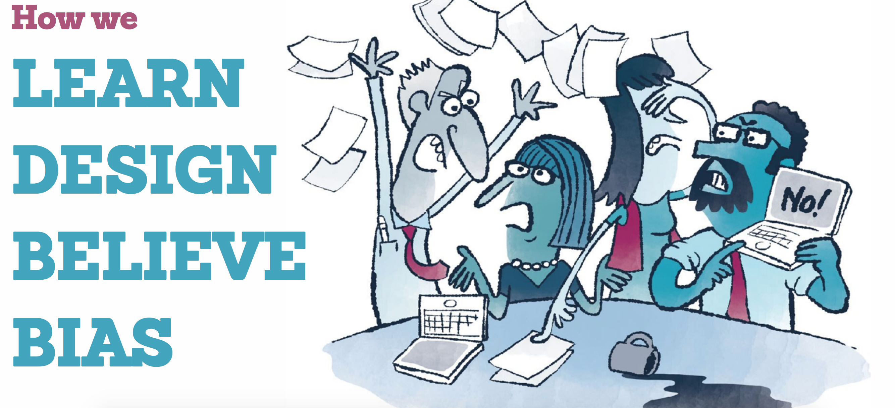

I Just Had the Worst Best Meeting
Kevin M. Hoffman, Founder, Seven Heads Design
Meetings
People ops = Meetings
4 different ways of thinking of meetings in your process, and how to turn them into good meetings

Thinking of meetings without carrying over the past experiences is the best, ask waht are the outcomes we want ? what decisions will we make ? What agenda will help us decide?
List wins, list problems, list changes post
Books and resources
Meeting Design: For Managers, Makers, and Everyone
Find all the slides for this talk
Slide for this conference Day 3 Talk-13 I Just had the Worst Best Meeting